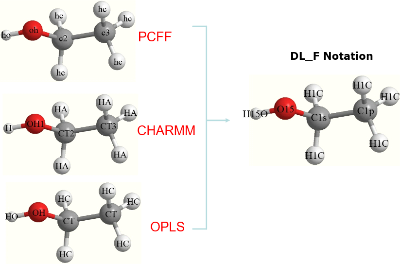
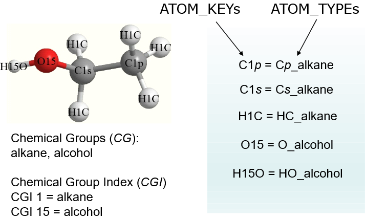

The DL_F Notation 1¶
This is the universal atom typing notation with a syntax format that is contiguous across a wide range of FF schemes.
For more information, please refer to the follow reference:
C.W. Yong, J. Chem. Inf. Model. 56, 1405-1409 (2016)
Additional information about DL_F Notation, available at SSRN: https://dx.doi.org/10.2139/ssrn.4254942

Atom typing
Different FF schemes use different rules to determine the ATOM_TYPEs. For this reason, converting one FF model to the other FF models is often a non-trivial task.
DL_FIELD uses a single DL_F conversion engine to carry out atom typing for a range of FF schemes. This means switching from one FF scheme to the other is a seamless process, without making any change to the configuration file, nor involvment of additional program script. Moreover, DL_FIELD can express ATOM_KEYs in DL_F Notation, which contain the chemical information of every atom in the system.
Diagram below shows assignments of ATOM_KEYs on the ethanol molecule.
{kind=link}
You will notice, different FF schemes assigned different ATOM_KEY labels that appear to be somewhat cryptic. In addition, the PCFF and CHARMM FF schemes distinguish the two types of carbon atoms in the molecule with different ATOM_KEY labels, whereas, OPLS represents both types of atoms with the same label (CT). In fact, all three FF schemes used different procedures to assign these labels.
By using the DL_F Notation, DL_FIELD assigns a consistent set of ATOM_KEY labels for the molecules, irrespective of which FF scheme being used.
{kind=link}
Note
Users can choose the option whether to produce ATOM_KEY labels in the standard FF schemes or the DL_F Notation in DL_FIELD control file.
In DL_F Notation, all atoms must always belong to a Chemical Group (CG), which is similar to the chemistry functional group. It indicates the chemical member to which the atom belongs to. Each CG is represented by the unique number, called the Chemical Group Index (CGI).
Note
A complete list of Chemical Group Index is shown in the file DLF_notation located in the lib/ folder. There are more than 400 entries and the list grows when newer DL_FIELD versions are released.
For instance, ethanol contains alkane and alcohol CGs, with the corresponding CGI of 1 and 15, respectively.